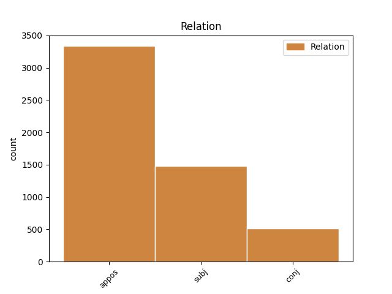
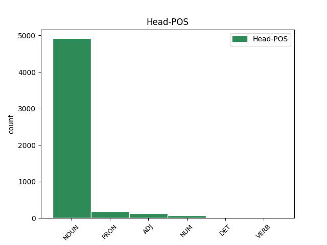
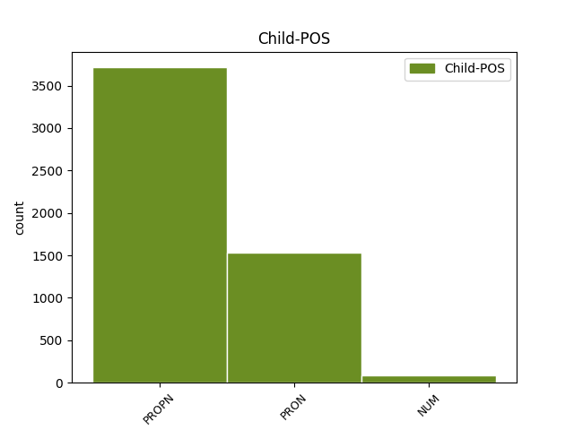

Distribution of features within this leaf



Agreement Rules sorted by frequency.
- When the dependent token is the appositional modifier(appos) of the head token, and the head token is NOUN and the dependent token is PROPN.
1 И _ _ _ _ 0 _ _ _
2 была _ _ _ _ 0 _ _ _
3 смуглая _ _ _ _ 0 _ _ _
4 девочка девочка NOUN _ Animacy=Anim|Case=Nom|Gender=Fem|Number=Sing 0 _ _ _
5 с _ _ _ _ 0 _ _ _
6 безжалостно _ _ _ _ 0 _ _ _
7 исцарапанными _ _ _ _ 0 _ _ _
8 ногами _ _ _ _ 0 _ _ _
9 , _ _ _ _ 0 _ _ _
10 сбитыми _ _ _ _ 0 _ _ _
11 коленями _ _ _ _ 0 _ _ _
12 , _ _ _ _ 0 _ _ _
13 острыми _ _ _ _ 0 _ _ _
14 лопатками _ _ _ _ 0 _ _ _
15 задиры _ _ _ _ 0 _ _ _
16 - _ _ _ _ 0 _ _ _
17 вылитая _ _ _ _ 0 _ _ _
18 Галя Галя PROPN _ Animacy=Anim|Case=Nom|Gender=Fem|Number=Sing 4 appos _ SpaceAfter=No
19 , _ _ _ _ 0 _ _ _
20 и _ _ _ _ 0 _ _ _
21 воспитательница _ _ _ _ 0 _ _ _
22 , _ _ _ _ 0 _ _ _
23 учившая _ _ _ _ 0 _ _ _
24 детей _ _ _ _ 0 _ _ _
25 какой-то _ _ _ _ 0 _ _ _
26 игре _ _ _ _ 0 _ _ _
27 , _ _ _ _ 0 _ _ _
28 на _ _ _ _ 0 _ _ _
29 мгновение _ _ _ _ 0 _ _ _
30 повернула _ _ _ _ 0 _ _ _
31 ко _ _ _ _ 0 _ _ _
32 мне _ _ _ _ 0 _ _ _
33 светлую _ _ _ _ 0 _ _ _
34 лунность _ _ _ _ 0 _ _ _
35 круглого _ _ _ _ 0 _ _ _
36 Муриного _ _ _ _ 0 _ _ _
37 лица _ _ _ _ 0 _ _ _
38 . _ _ _ _ 0 _ _ _
1 Весь _ _ _ _ 0 _ _ _
2 лес _ _ _ _ 0 _ _ _
3 был _ _ _ _ 0 _ _ _
4 населен _ _ _ _ 0 _ _ _
5 голосами _ _ _ _ 0 _ _ _
6 прошлого _ _ _ _ 0 _ _ _
7 , _ _ _ _ 0 _ _ _
8 и _ _ _ _ 0 _ _ _
9 я _ _ _ _ 0 _ _ _
10 впервые _ _ _ _ 0 _ _ _
11 с _ _ _ _ 0 _ _ _
12 ошеломляющей _ _ _ _ 0 _ _ _
13 силой _ _ _ _ 0 _ _ _
14 ощутил _ _ _ _ 0 _ _ _
15 , _ _ _ _ 0 _ _ _
16 как _ _ _ _ 0 _ _ _
17 много _ _ _ _ 0 _ _ _
18 пробыл _ _ _ _ 0 _ _ _
19 на _ _ _ _ 0 _ _ _
20 этом _ _ _ _ 0 _ _ _
21 свете _ _ _ _ 0 _ _ _
22 и _ _ _ _ 0 _ _ _
23 что _ _ _ _ 0 _ _ _
24 прожитое _ _ _ _ 0 _ _ _
25 - _ _ _ _ 0 _ _ _
26 это _ _ _ _ 0 _ _ _
27 не _ _ _ _ 0 _ _ _
28 разбег _ _ _ _ 0 _ _ _
29 для _ _ _ _ 0 _ _ _
30 взлета _ _ _ _ 0 _ _ _
31 в _ _ _ _ 0 _ _ _
32 какую-то _ _ _ _ 0 _ _ _
33 будущую _ _ _ _ 0 _ _ _
34 , _ _ _ _ 0 _ _ _
35 настоящую _ _ _ _ 0 _ _ _
36 жизнь _ _ _ _ 0 _ _ _
37 , _ _ _ _ 0 _ _ _
38 что _ _ _ _ 0 _ _ _
39 это это PRON _ Animacy=Inan|Case=Nom|Gender=Neut|Number=Sing 41 subj _ _
40 уже _ _ _ _ 0 _ _ _
41 жизнь жизнь NOUN _ Animacy=Inan|Case=Nom|Gender=Fem|Number=Sing 0 _ _ _
42 , _ _ _ _ 0 _ _ _
43 в _ _ _ _ 0 _ _ _
44 которой _ _ _ _ 0 _ _ _
45 все _ _ _ _ 0 _ _ _
46 связано _ _ _ _ 0 _ _ _
47 : _ _ _ _ 0 _ _ _
48 далекое _ _ _ _ 0 _ _ _
49 прошлое _ _ _ _ 0 _ _ _
50 с _ _ _ _ 0 _ _ _
51 настоящим _ _ _ _ 0 _ _ _
52 , _ _ _ _ 0 _ _ _
53 а _ _ _ _ 0 _ _ _
54 если _ _ _ _ 0 _ _ _
55 мне _ _ _ _ 0 _ _ _
56 суждено _ _ _ _ 0 _ _ _
57 будущее _ _ _ _ 0 _ _ _
58 , _ _ _ _ 0 _ _ _
59 то _ _ _ _ 0 _ _ _
60 и _ _ _ _ 0 _ _ _
61 оно _ _ _ _ 0 _ _ _
62 окажется _ _ _ _ 0 _ _ _
63 нерасторжимо _ _ _ _ 0 _ _ _
64 связанным _ _ _ _ 0 _ _ _
65 с _ _ _ _ 0 _ _ _
66 пережитым _ _ _ _ 0 _ _ _
67 ; _ _ _ _ 0 _ _ _
1 Дарили _ _ _ _ 0 _ _ _
2 дед _ _ _ _ 0 _ _ _
3 , _ _ _ _ 0 _ _ _
4 мама мама NOUN _ Animacy=Anim|Case=Nom|Gender=Fem|Number=Sing 0 _ _ _
5 , _ _ _ _ 0 _ _ _
6 Дашура Дашура PROPN _ Animacy=Anim|Case=Nom|Gender=Fem|Number=Sing 4 conj _ SpaceAfter=No
7 , _ _ _ _ 0 _ _ _
8 отцу _ _ _ _ 0 _ _ _
9 было _ _ _ _ 0 _ _ _
10 не _ _ _ _ 0 _ _ _
11 до _ _ _ _ 0 _ _ _
12 того _ _ _ _ 0 _ _ _
13 , _ _ _ _ 0 _ _ _
14 он _ _ _ _ 0 _ _ _
15 жил _ _ _ _ 0 _ _ _
16 жадно _ _ _ _ 0 _ _ _
17 , _ _ _ _ 0 _ _ _
18 заинтересованно _ _ _ _ 0 _ _ _
19 собственной _ _ _ _ 0 _ _ _
20 , _ _ _ _ 0 _ _ _
21 еще _ _ _ _ 0 _ _ _
22 довольно _ _ _ _ 0 _ _ _
23 молодой _ _ _ _ 0 _ _ _
24 жизнью _ _ _ _ 0 _ _ _
25 ; _ _ _ _ 0 _ _ _
26 к _ _ _ _ 0 _ _ _
27 тому _ _ _ _ 0 _ _ _
28 же _ _ _ _ 0 _ _ _
29 , _ _ _ _ 0 _ _ _
30 как _ _ _ _ 0 _ _ _
31 большинство _ _ _ _ 0 _ _ _
32 молодых _ _ _ _ 0 _ _ _
33 отцов _ _ _ _ 0 _ _ _
34 , _ _ _ _ 0 _ _ _
35 он _ _ _ _ 0 _ _ _
36 не _ _ _ _ 0 _ _ _
37 очень _ _ _ _ 0 _ _ _
38 - _ _ _ _ 0 _ _ _
39 то _ _ _ _ 0 _ _ _
40 представлял _ _ _ _ 0 _ _ _
41 себе _ _ _ _ 0 _ _ _
42 , _ _ _ _ 0 _ _ _
43 что _ _ _ _ 0 _ _ _
44 следует _ _ _ _ 0 _ _ _
45 мне _ _ _ _ 0 _ _ _
46 дарить _ _ _ _ 0 _ _ _
47 : _ _ _ _ 0 _ _ _
48 до _ _ _ _ 0 _ _ _
49 чего _ _ _ _ 0 _ _ _
50 я _ _ _ _ 0 _ _ _
51 дорос _ _ _ _ 0 _ _ _
52 , _ _ _ _ 0 _ _ _
53 недорос _ _ _ _ 0 _ _ _
54 , _ _ _ _ 0 _ _ _
55 а _ _ _ _ 0 _ _ _
56 что _ _ _ _ 0 _ _ _
57 и _ _ _ _ 0 _ _ _
58 перерос _ _ _ _ 0 _ _ _
59 . _ _ _ _ 0 _ _ _
1 Но _ _ _ _ 0 _ _ _
2 , _ _ _ _ 0 _ _ _
3 начиная _ _ _ _ 0 _ _ _
4 с _ _ _ _ 0 _ _ _
5 20-х _ _ _ _ 0 _ _ _
6 годов _ _ _ _ 0 _ _ _
7 , _ _ _ _ 0 _ _ _
8 утвердилось _ _ _ _ 0 _ _ _
9 иное _ _ _ _ 0 _ _ _
10 мнение _ _ _ _ 0 _ _ _
11 : _ _ _ _ 0 _ _ _
12 ВЛКСМ ВЛКСМ PROPN _ Animacy=Inan|Case=Nom|Gender=Masc|Number=Sing 16 subj _ _
13 - _ _ _ _ 0 _ _ _
14 всего _ _ _ _ 0 _ _ _
15 лишь _ _ _ _ 0 _ _ _
16 инструмент инструмент NOUN _ Animacy=Inan|Case=Nom|Gender=Masc|Number=Sing 0 _ _ _
17 в _ _ _ _ 0 _ _ _
18 руках _ _ _ _ 0 _ _ _
19 партии _ _ _ _ 0 _ _ _
20 . _ _ _ _ 0 _ _ _
1 - _ _ _ _ 0 _ _ _
2 Она она PRON _ Case=Nom|Gender=Fem|Number=Sing|Person=3 4 subj _ _
3 вся _ _ _ _ 0 _ _ _
4 зеленая зеленый ADJ _ Case=Nom|Degree=Pos|Gender=Fem|Number=Sing 0 _ _ _
5 , _ _ _ _ 0 _ _ _
6 до _ _ _ _ 0 _ _ _
7 последнего _ _ _ _ 0 _ _ _
8 перышка _ _ _ _ 0 _ _ _
9 , _ _ _ _ 0 _ _ _
10 и _ _ _ _ 0 _ _ _
11 с _ _ _ _ 0 _ _ _
12 красной _ _ _ _ 0 _ _ _
13 головой _ _ _ _ 0 _ _ _
14 ! _ _ _ _ 0 _ _ _
1 - _ _ _ _ 0 _ _ _
2 Мама _ _ _ _ 0 _ _ _
3 , _ _ _ _ 0 _ _ _
4 кто кто PRON _ Case=Nom 0 _ _ _
5 это это PRON _ Animacy=Inan|Case=Nom|Gender=Neut|Number=Sing 4 subj _ SpaceAfter=No
6 ! _ _ _ _ 0 _ _ _
7 - _ _ _ _ 0 _ _ _
8 пробормотал _ _ _ _ 0 _ _ _
9 я _ _ _ _ 0 _ _ _
10 сонным _ _ _ _ 0 _ _ _
11 голосом _ _ _ _ 0 _ _ _
12 . _ _ _ _ 0 _ _ _
1 Другим _ _ _ _ 0 _ _ _
2 эти _ _ _ _ 0 _ _ _
3 бумажки _ _ _ _ 0 _ _ _
4 действительно _ _ _ _ 0 _ _ _
5 давали _ _ _ _ 0 _ _ _
6 богатство _ _ _ _ 0 _ _ _
7 или _ _ _ _ 0 _ _ _
8 хороший _ _ _ _ 0 _ _ _
9 заработок _ _ _ _ 0 _ _ _
10 , _ _ _ _ 0 _ _ _
11 отцу _ _ _ _ 0 _ _ _
12 они _ _ _ _ 0 _ _ _
13 не _ _ _ _ 0 _ _ _
14 приносили _ _ _ _ 0 _ _ _
15 ничего ничто PRON _ Case=Gen 0 _ _ _
16 , _ _ _ _ 0 _ _ _
17 или _ _ _ _ 0 _ _ _
18 почти _ _ _ _ 0 _ _ _
19 ничего ничто PRON _ Case=Gen 15 conj _ SpaceAfter=No
20 . _ _ _ _ 0 _ _ _
1 Мы _ _ _ _ 0 _ _ _
2 - _ _ _ _ 0 _ _ _
3 мама _ _ _ _ 0 _ _ _
4 , _ _ _ _ 0 _ _ _
5 дед дед NOUN _ Animacy=Anim|Case=Nom|Gender=Masc|Number=Sing 0 _ _ _
6 и _ _ _ _ 0 _ _ _
7 я я PRON _ Case=Nom|Number=Sing|Person=1 5 conj _ _
8 - _ _ _ _ 0 _ _ _
9 довольно _ _ _ _ 0 _ _ _
10 долго _ _ _ _ 0 _ _ _
11 томились _ _ _ _ 0 _ _ _
12 перед _ _ _ _ 0 _ _ _
13 высокими _ _ _ _ 0 _ _ _
14 стенами _ _ _ _ 0 _ _ _
15 тюрьмы _ _ _ _ 0 _ _ _
16 , _ _ _ _ 0 _ _ _
17 затем _ _ _ _ 0 _ _ _
18 нас _ _ _ _ 0 _ _ _
19 впустили _ _ _ _ 0 _ _ _
20 во _ _ _ _ 0 _ _ _
21 внутренний _ _ _ _ 0 _ _ _
22 двор _ _ _ _ 0 _ _ _
23 , _ _ _ _ 0 _ _ _
24 битком _ _ _ _ 0 _ _ _
25 набитый _ _ _ _ 0 _ _ _
26 такими _ _ _ _ 0 _ _ _
27 же _ _ _ _ 0 _ _ _
28 как _ _ _ _ 0 _ _ _
29 и _ _ _ _ 0 _ _ _
30 мы _ _ _ _ 0 _ _ _
31 , _ _ _ _ 0 _ _ _
32 прощающимися _ _ _ _ 0 _ _ _
33 . _ _ _ _ 0 _ _ _
1 Как _ _ _ _ 0 _ _ _
2 видно _ _ _ _ 0 _ _ _
3 , _ _ _ _ 0 _ _ _
4 в _ _ _ _ 0 _ _ _
5 период _ _ _ _ 0 _ _ _
6 обсуждения _ _ _ _ 0 _ _ _
7 " _ _ _ _ 0 _ _ _
8 не _ _ _ _ 0 _ _ _
9 нашлось _ _ _ _ 0 _ _ _
10 " _ _ _ _ 0 _ _ _
11 двух _ _ _ _ 0 _ _ _
12 , _ _ _ _ 0 _ _ _
13 трех три NUM _ Case=Gen 0 _ _ _
14 , _ _ _ _ 0 _ _ _
15 четырех четыре NUM _ Case=Gen 13 conj _ _
16 достойных _ _ _ _ 0 _ _ _
17 кандидатур _ _ _ _ 0 _ _ _
18 , _ _ _ _ 0 _ _ _
19 словно _ _ _ _ 0 _ _ _
20 наша _ _ _ _ 0 _ _ _
21 земля _ _ _ _ 0 _ _ _
22 оскудела _ _ _ _ 0 _ _ _
23 хорошими _ _ _ _ 0 _ _ _
24 людьми _ _ _ _ 0 _ _ _
25 . _ _ _ _ 0 _ _ _
1 А _ _ _ _ 0 _ _ _
2 ответ ответ NOUN _ Animacy=Inan|Case=Nom|Gender=Masc|Number=Sing 0 _ _ _
3 - _ _ _ _ 0 _ _ _
4 вот _ _ _ _ 0 _ _ _
5 он он PRON _ Case=Nom|Gender=Masc|Number=Sing|Person=3 2 appos _ SpaceAfter=No
6 : _ _ _ _ 0 _ _ _
7 все _ _ _ _ 0 _ _ _
8 прежние _ _ _ _ 0 _ _ _
9 попытки _ _ _ _ 0 _ _ _
10 реформ _ _ _ _ 0 _ _ _
11 не _ _ _ _ 0 _ _ _
12 принесли _ _ _ _ 0 _ _ _
13 должного _ _ _ _ 0 _ _ _
14 результата _ _ _ _ 0 _ _ _
15 , _ _ _ _ 0 _ _ _
16 потому _ _ _ _ 0 _ _ _
17 что _ _ _ _ 0 _ _ _
18 не _ _ _ _ 0 _ _ _
19 опирались _ _ _ _ 0 _ _ _
20 на _ _ _ _ 0 _ _ _
21 широкое _ _ _ _ 0 _ _ _
22 развертывание _ _ _ _ 0 _ _ _
23 процессов _ _ _ _ 0 _ _ _
24 демократизации _ _ _ _ 0 _ _ _
25 . _ _ _ _ 0 _ _ _
1 Например _ _ _ _ 0 _ _ _
2 , _ _ _ _ 0 _ _ _
3 одна один NUM _ Case=Nom|Gender=Fem 9 subj _ _
4 из _ _ _ _ 0 _ _ _
5 фундаментальных _ _ _ _ 0 _ _ _
6 задач _ _ _ _ 0 _ _ _
7 космонавтики _ _ _ _ 0 _ _ _
8 - _ _ _ _ 0 _ _ _
9 создание создание NOUN _ Animacy=Inan|Case=Nom|Gender=Neut|Number=Sing 0 _ _ _
10 так _ _ _ _ 0 _ _ _
11 называемых _ _ _ _ 0 _ _ _
12 замкнутых _ _ _ _ 0 _ _ _
13 экологических _ _ _ _ 0 _ _ _
14 систем _ _ _ _ 0 _ _ _
15 . _ _ _ _ 0 _ _ _
1 В _ _ _ _ 0 _ _ _
2 законе _ _ _ _ 0 _ _ _
3 должны _ _ _ _ 0 _ _ _
4 быть _ _ _ _ 0 _ _ _
5 предусмотрены _ _ _ _ 0 _ _ _
6 четкие _ _ _ _ 0 _ _ _
7 и _ _ _ _ 0 _ _ _
8 развернутые _ _ _ _ 0 _ _ _
9 гарантии _ _ _ _ 0 _ _ _
10 свободного _ _ _ _ 0 _ _ _
11 применения _ _ _ _ 0 _ _ _
12 языков _ _ _ _ 0 _ _ _
13 других _ _ _ _ 0 _ _ _
14 народов _ _ _ _ 0 _ _ _
15 с _ _ _ _ 0 _ _ _
16 тем _ _ _ _ 0 _ _ _
17 , _ _ _ _ 0 _ _ _
18 чтобы _ _ _ _ 0 _ _ _
19 было _ _ _ _ 0 _ _ _
20 обеспечено _ _ _ _ 0 _ _ _
21 ленинское _ _ _ _ 0 _ _ _
22 положение _ _ _ _ 0 _ _ _
23 о _ _ _ _ 0 _ _ _
24 равноправии _ _ _ _ 0 _ _ _
25 языков _ _ _ _ 0 _ _ _
26 и _ _ _ _ 0 _ _ _
27 недопустимости _ _ _ _ 0 _ _ _
28 каких _ _ _ _ 0 _ _ _
29 бы _ _ _ _ 0 _ _ _
30 то _ _ _ _ 0 _ _ _
31 ни _ _ _ _ 0 _ _ _
32 было _ _ _ _ 0 _ _ _
33 привилегий _ _ _ _ 0 _ _ _
34 одной _ _ _ _ 0 _ _ _
35 нации нация NOUN _ Animacy=Inan|Case=Dat|Gender=Fem|Number=Sing 0 _ _ _
36 или _ _ _ _ 0 _ _ _
37 одному один NUM _ Case=Dat|Gender=Masc 35 conj _ _
38 из _ _ _ _ 0 _ _ _
39 языков _ _ _ _ 0 _ _ _
40 . _ _ _ _ 0 _ _ _
1 Она _ _ _ _ 0 _ _ _
2 остановилась _ _ _ _ 0 _ _ _
3 и _ _ _ _ 0 _ _ _
4 спросила _ _ _ _ 0 _ _ _
5 : _ _ _ _ 0 _ _ _
6 - _ _ _ _ 0 _ _ _
7 Мальчик _ _ _ _ 0 _ _ _
8 , _ _ _ _ 0 _ _ _
9 ты ты PRON _ Case=Nom|Number=Sing|Person=2 10 subj _ _
10 чей чей DET _ Case=Nom|Gender=Masc|Number=Sing 0 _ _ _
11 ? _ _ _ _ 0 _ _ _
1 Это это PRON _ Animacy=Inan|Case=Nom|Gender=Neut|Number=Sing 2 subj _ _
2 один один NUM _ Case=Nom|Gender=Masc 0 _ _ _
3 из _ _ _ _ 0 _ _ _
4 наиболее _ _ _ _ 0 _ _ _
5 острых _ _ _ _ 0 _ _ _
6 вопросов _ _ _ _ 0 _ _ _
7 , _ _ _ _ 0 _ _ _
8 поставленных _ _ _ _ 0 _ _ _
9 перед _ _ _ _ 0 _ _ _
10 партией _ _ _ _ 0 _ _ _
11 ходом _ _ _ _ 0 _ _ _
12 перестройки _ _ _ _ 0 _ _ _
13 . _ _ _ _ 0 _ _ _
1 - _ _ _ _ 0 _ _ _
2 На _ _ _ _ 0 _ _ _
3 практике _ _ _ _ 0 _ _ _
4 этот _ _ _ _ 0 _ _ _
5 принцип _ _ _ _ 0 _ _ _
6 был _ _ _ _ 0 _ _ _
7 реализован _ _ _ _ 0 _ _ _
8 , _ _ _ _ 0 _ _ _
9 можно _ _ _ _ 0 _ _ _
10 сказать _ _ _ _ 0 _ _ _
11 , _ _ _ _ 0 _ _ _
12 случайно _ _ _ _ 0 _ _ _
13 , _ _ _ _ 0 _ _ _
14 - _ _ _ _ 0 _ _ _
15 рассказывает _ _ _ _ 0 _ _ _
16 один один NUM _ Case=Nom|Gender=Masc 0 _ _ _
17 из _ _ _ _ 0 _ _ _
18 создателей _ _ _ _ 0 _ _ _
19 таких _ _ _ _ 0 _ _ _
20 станков _ _ _ _ 0 _ _ _
21 , _ _ _ _ 0 _ _ _
22 доктор _ _ _ _ 0 _ _ _
23 технических _ _ _ _ 0 _ _ _
24 наук _ _ _ _ 0 _ _ _
25 П. П. PROPN _ Animacy=Anim|Case=Nom|Gender=Masc|Number=Sing 16 appos _ _
26 М. _ _ _ _ 0 _ _ _
27 Чернянский _ _ _ _ 0 _ _ _
28 . _ _ _ _ 0 _ _ _
1 Сергей Сергей PROPN _ Animacy=Anim|Case=Nom|Gender=Masc|Number=Sing 2 subj _ _
2 третий третий ADJ _ Case=Nom|Degree=Pos|Gender=Masc|Number=Sing 0 _ _ _
3 . _ _ _ _ 0 _ _ _
1 Мать _ _ _ _ 0 _ _ _
2 тут _ _ _ _ 0 _ _ _
3 же _ _ _ _ 0 _ _ _
4 , _ _ _ _ 0 _ _ _
5 она _ _ _ _ 0 _ _ _
6 просит _ _ _ _ 0 _ _ _
7 поймать _ _ _ _ 0 _ _ _
8 ворону _ _ _ _ 0 _ _ _
9 , _ _ _ _ 0 _ _ _
10 а _ _ _ _ 0 _ _ _
11 он он PRON _ Case=Nom|Gender=Masc|Number=Sing|Person=3 0 _ _ _
12 , _ _ _ _ 0 _ _ _
13 Гарусов Гарусов PROPN _ Animacy=Anim|Case=Nom|Gender=Masc|Number=Sing 11 appos _ SpaceAfter=No
14 , _ _ _ _ 0 _ _ _
15 не _ _ _ _ 0 _ _ _
16 может _ _ _ _ 0 _ _ _
17 и _ _ _ _ 0 _ _ _
18 плачет _ _ _ _ 0 _ _ _
19 . _ _ _ _ 0 _ _ _
1 Никому _ _ _ _ 0 _ _ _
2 он _ _ _ _ 0 _ _ _
3 не _ _ _ _ 0 _ _ _
4 был _ _ _ _ 0 _ _ _
5 особенно _ _ _ _ 0 _ _ _
6 нужен _ _ _ _ 0 _ _ _
7 - _ _ _ _ 0 _ _ _
8 он _ _ _ _ 0 _ _ _
9 как _ _ _ _ 0 _ _ _
10 он он PRON _ Case=Nom|Gender=Masc|Number=Sing|Person=3 0 _ _ _
11 , _ _ _ _ 0 _ _ _
12 лично _ _ _ _ 0 _ _ _
13 как _ _ _ _ 0 _ _ _
14 Гарусов Гарусов PROPN _ Animacy=Anim|Case=Nom|Gender=Masc|Number=Sing 10 conj _ SpaceAfter=No
15 . _ _ _ _ 0 _ _ _
1 Д. Д. PROPN _ Animacy=Anim|Case=Nom|Gender=Masc|Number=Sing 5 subj _ SpaceAfter=No
2 В. _ _ _ _ 0 _ _ _
3 Редозубов _ _ _ _ 0 _ _ _
4 - _ _ _ _ 0 _ _ _
5 один один NUM _ Case=Nom|Gender=Masc 0 _ _ _
6 из _ _ _ _ 0 _ _ _
7 основателей _ _ _ _ 0 _ _ _
8 мерзлотоведения _ _ _ _ 0 _ _ _
9 . _ _ _ _ 0 _ _ _
1 Поддержав _ _ _ _ 0 _ _ _
2 или _ _ _ _ 0 _ _ _
3 хотя _ _ _ _ 0 _ _ _
4 бы _ _ _ _ 0 _ _ _
5 обнадежив _ _ _ _ 0 _ _ _
6 тем _ _ _ _ 0 _ _ _
7 или _ _ _ _ 0 _ _ _
8 иным _ _ _ _ 0 _ _ _
9 способом _ _ _ _ 0 _ _ _
10 сирийскую _ _ _ _ 0 _ _ _
11 оппозицию _ _ _ _ 0 _ _ _
12 , _ _ _ _ 0 _ _ _
13 Китай _ _ _ _ 0 _ _ _
14 поддержит _ _ _ _ 0 _ _ _
15 усилия _ _ _ _ 0 _ _ _
16 всего _ _ _ _ 0 _ _ _
17 арабского _ _ _ _ 0 _ _ _
18 мира _ _ _ _ 0 _ _ _
19 во _ _ _ _ 0 _ _ _
20 главе _ _ _ _ 0 _ _ _
21 с _ _ _ _ 0 _ _ _
22 Лигой _ _ _ _ 0 _ _ _
23 арабских _ _ _ _ 0 _ _ _
24 государств _ _ _ _ 0 _ _ _
25 , _ _ _ _ 0 _ _ _
26 а _ _ _ _ 0 _ _ _
27 также _ _ _ _ 0 _ _ _
28 сильную сильный ADJ _ Case=Acc|Degree=Pos|Gender=Fem|Number=Sing 0 _ _ _
29 и _ _ _ _ 0 _ _ _
30 влиятельную _ _ _ _ 0 _ _ _
31 Турцию Турция PROPN _ Animacy=Inan|Case=Acc|Gender=Fem|Number=Sing 28 conj _ SpaceAfter=No
32 . _ _ _ _ 0 _ _ _
1 Передача _ _ _ _ 0 _ _ _
2 первых _ _ _ _ 0 _ _ _
3 67 _ _ _ _ 0 _ _ _
4 томов _ _ _ _ 0 _ _ _
5 из _ _ _ _ 0 _ _ _
6 183 _ _ _ _ 0 _ _ _
7 - _ _ _ _ 0 _ _ _
8 томного _ _ _ _ 0 _ _ _
9 дела _ _ _ _ 0 _ _ _
10 состоялась _ _ _ _ 0 _ _ _
11 в _ _ _ _ 0 _ _ _
12 Москве _ _ _ _ 0 _ _ _
13 в _ _ _ _ 0 _ _ _
14 мае _ _ _ _ 0 _ _ _
15 2010 _ _ _ _ 0 _ _ _
16 года _ _ _ _ 0 _ _ _
17 в _ _ _ _ 0 _ _ _
18 ходе _ _ _ _ 0 _ _ _
19 визита _ _ _ _ 0 _ _ _
20 исполняющего исполнять VERB _ Aspect=Imp|Case=Gen|Gender=Masc|Number=Sing|Tense=Pres|VerbForm=Part|Voice=Act 0 _ _ _
21 обязанности _ _ _ _ 0 _ _ _
22 президента _ _ _ _ 0 _ _ _
23 Польши _ _ _ _ 0 _ _ _
24 Коморовского Коморовский PROPN _ Animacy=Anim|Case=Gen|Gender=Masc|Number=Sing 20 appos _ SpaceAfter=No
25 . _ _ _ _ 0 _ _ _
1 Но _ _ _ _ 0 _ _ _
2 их они PRON _ Case=Gen|Number=Plur|Person=3 0 _ _ _
3 ( _ _ _ _ 0 _ _ _
4 нас мы PRON _ Case=Gen|Number=Plur|Person=1 2 appos _ SpaceAfter=No
5 ) _ _ _ _ 0 _ _ _
6 и _ _ _ _ 0 _ _ _
7 не _ _ _ _ 0 _ _ _
8 четверо _ _ _ _ 0 _ _ _
9 , _ _ _ _ 0 _ _ _
10 а _ _ _ _ 0 _ _ _
11 несколько _ _ _ _ 0 _ _ _
12 больше _ _ _ _ 0 _ _ _
13 , _ _ _ _ 0 _ _ _
14 я _ _ _ _ 0 _ _ _
15 думаю _ _ _ _ 0 _ _ _
16 . _ _ _ _ 0 _ _ _
1 - _ _ _ _ 0 _ _ _
2 А _ _ _ _ 0 _ _ _
3 что что PRON _ Case=Nom 0 _ _ _
4 такое _ _ _ _ 0 _ _ _
5 Дом Дом PROPN _ Animacy=Inan|Case=Nom|Gender=Masc|Number=Sing 3 subj _ _
6 ребенка _ _ _ _ 0 _ _ _
7 ? _ _ _ _ 0 _ _ _
1 Первый первый ADJ _ Case=Nom|Degree=Pos|Gender=Masc|Number=Sing 0 _ _ _
2 из _ _ _ _ 0 _ _ _
3 них _ _ _ _ 0 _ _ _
4 , _ _ _ _ 0 _ _ _
5 Генри Генри PROPN _ Animacy=Anim|Case=Nom|Gender=Masc|Number=Sing 1 appos _ _
6 Коулс _ _ _ _ 0 _ _ _
7 ( _ _ _ _ 0 _ _ _
8 1869 _ _ _ _ 0 _ _ _
9 - _ _ _ _ 0 _ _ _
10 1939 _ _ _ _ 0 _ _ _
11 ) _ _ _ _ 0 _ _ _
12 , _ _ _ _ 0 _ _ _
13 занимался _ _ _ _ 0 _ _ _
14 изучением _ _ _ _ 0 _ _ _
15 растительности _ _ _ _ 0 _ _ _
16 на _ _ _ _ 0 _ _ _
17 побережье _ _ _ _ 0 _ _ _
18 озера _ _ _ _ 0 _ _ _
19 Мичиган _ _ _ _ 0 _ _ _
20 , _ _ _ _ 0 _ _ _
21 которое _ _ _ _ 0 _ _ _
22 на _ _ _ _ 0 _ _ _
23 протяжении _ _ _ _ 0 _ _ _
24 длительного _ _ _ _ 0 _ _ _
25 периода _ _ _ _ 0 _ _ _
26 мелело _ _ _ _ 0 _ _ _
27 и _ _ _ _ 0 _ _ _
28 отступало _ _ _ _ 0 _ _ _
29 от _ _ _ _ 0 _ _ _
30 берега _ _ _ _ 0 _ _ _
31 . _ _ _ _ 0 _ _ _
1 Две _ _ _ _ 0 _ _ _
2 стены _ _ _ _ 0 _ _ _
3 у _ _ _ _ 0 _ _ _
4 него _ _ _ _ 0 _ _ _
5 были _ _ _ _ 0 _ _ _
6 настоящие _ _ _ _ 0 _ _ _
7 , _ _ _ _ 0 _ _ _
8 капитальные _ _ _ _ 0 _ _ _
9 , _ _ _ _ 0 _ _ _
10 а _ _ _ _ 0 _ _ _
11 две два NUM _ Case=Nom|Gender=Fem 13 subj _ _
12 - _ _ _ _ 0 _ _ _
13 дощатые дощатый ADJ _ Case=Nom|Degree=Pos|Number=Plur 0 _ _ _
14 , _ _ _ _ 0 _ _ _
15 оклеенные _ _ _ _ 0 _ _ _
16 обоями _ _ _ _ 0 _ _ _
17 , _ _ _ _ 0 _ _ _
18 в _ _ _ _ 0 _ _ _
19 три _ _ _ _ 0 _ _ _
20 моих _ _ _ _ 0 _ _ _
21 роста _ _ _ _ 0 _ _ _
22 и _ _ _ _ 0 _ _ _
23 много _ _ _ _ 0 _ _ _
24 не _ _ _ _ 0 _ _ _
25 доходящие _ _ _ _ 0 _ _ _
26 до _ _ _ _ 0 _ _ _
27 потолка _ _ _ _ 0 _ _ _
28 . _ _ _ _ 0 _ _ _
1 А _ _ _ _ 0 _ _ _
2 старшие старший ADJ _ Case=Nom|Degree=Pos|Number=Plur 0 _ _ _
3 , _ _ _ _ 0 _ _ _
4 ходячие _ _ _ _ 0 _ _ _
5 - _ _ _ _ 0 _ _ _
6 года _ _ _ _ 0 _ _ _
7 по _ _ _ _ 0 _ _ _
8 полтора _ _ _ _ 0 _ _ _
9 - _ _ _ _ 0 _ _ _
10 два _ _ _ _ 0 _ _ _
11 , _ _ _ _ 0 _ _ _
12 - _ _ _ _ 0 _ _ _
13 как _ _ _ _ 0 _ _ _
14 они они PRON _ Case=Nom|Number=Plur|Person=3 2 appos _ _
15 жадно _ _ _ _ 0 _ _ _
16 толпились _ _ _ _ 0 _ _ _
17 вокруг _ _ _ _ 0 _ _ _
18 рояля _ _ _ _ 0 _ _ _
19 ! _ _ _ _ 0 _ _ _
1 И _ _ _ _ 0 _ _ _
2 что что PRON _ Case=Nom 4 subj _ _
3 самое _ _ _ _ 0 _ _ _
4 шокирующее шокировать VERB _ Aspect=Imp|Case=Nom|Gender=Neut|Number=Sing|Tense=Pres|VerbForm=Part|Voice=Act 0 _ _ _
5 - _ _ _ _ 0 _ _ _
6 термальное _ _ _ _ 0 _ _ _
7 пятно _ _ _ _ 0 _ _ _
8 как _ _ _ _ 0 _ _ _
9 бы _ _ _ _ 0 _ _ _
10 блуждает _ _ _ _ 0 _ _ _
11 по _ _ _ _ 0 _ _ _
12 территории _ _ _ _ 0 _ _ _
13 полигона _ _ _ _ 0 _ _ _
14 , _ _ _ _ 0 _ _ _
15 перемещаясь _ _ _ _ 0 _ _ _
16 под _ _ _ _ 0 _ _ _
17 действием _ _ _ _ 0 _ _ _
18 каких-то _ _ _ _ 0 _ _ _
19 неизвестных _ _ _ _ 0 _ _ _
20 науке _ _ _ _ 0 _ _ _
21 факторов _ _ _ _ 0 _ _ _
22 . _ _ _ _ 0 _ _ _
1 Показали _ _ _ _ 0 _ _ _
2 нам _ _ _ _ 0 _ _ _
3 одного _ _ _ _ 0 _ _ _
4 такого такой DET _ Case=Gen|Gender=Masc|Number=Sing 0 _ _ _
5 , _ _ _ _ 0 _ _ _
6 Валентина Валентин PROPN _ Animacy=Anim|Case=Gen|Gender=Masc|Number=Sing 4 appos _ SpaceAfter=No
7 . _ _ _ _ 0 _ _ _
1 Папа _ _ _ _ 0 _ _ _
2 хороший _ _ _ _ 0 _ _ _
3 , _ _ _ _ 0 _ _ _
4 смирный смирный ADJ _ Case=Nom|Degree=Pos|Gender=Masc|Number=Sing 0 _ _ _
5 , _ _ _ _ 0 _ _ _
6 папа _ _ _ _ 0 _ _ _
7 что что PRON _ Case=Nom 4 conj _ _
8 надо _ _ _ _ 0 _ _ _
9 , _ _ _ _ 0 _ _ _
10 папа _ _ _ _ 0 _ _ _
11 при _ _ _ _ 0 _ _ _
12 деле _ _ _ _ 0 _ _ _
13 . _ _ _ _ 0 _ _ _
Disagree Examples:
1 У _ _ _ _ 0 _ _ _
2 вас вы PRON _ Case=Gen|Number=Plur|Person=2 0 _ _ _
3 там _ _ _ _ 0 _ _ _
4 полный _ _ _ _ 0 _ _ _
5 беспорядок _ _ _ _ 0 _ _ _
6 , _ _ _ _ 0 _ _ _
7 а _ _ _ _ 0 _ _ _
8 вы вы PRON _ Case=Nom|Number=Plur|Person=2 2 conj _ SpaceAfter=No
9 … _ _ _ _ 0 _ _ _
10 а _ _ _ _ 0 _ _ _
11 вы _ _ _ _ 0 _ _ _
12 только _ _ _ _ 0 _ _ _
13 бумажки _ _ _ _ 0 _ _ _
14 читаете _ _ _ _ 0 _ _ _
15 . _ _ _ _ 0 _ _ _
1 Пессимистический _ _ _ _ 0 _ _ _
2 настрой _ _ _ _ 0 _ _ _
3 ученых _ _ _ _ 0 _ _ _
4 основан _ _ _ _ 0 _ _ _
5 не _ _ _ _ 0 _ _ _
6 только _ _ _ _ 0 _ _ _
7 на _ _ _ _ 0 _ _ _
8 оценке _ _ _ _ 0 _ _ _
9 масштабов _ _ _ _ 0 _ _ _
10 разворачивающегося _ _ _ _ 0 _ _ _
11 на _ _ _ _ 0 _ _ _
12 планете планета NOUN _ Animacy=Inan|Case=Loc|Gender=Fem|Number=Sing 0 _ _ _
13 Земля Земля PROPN _ Animacy=Inan|Case=Nom|Gender=Fem|Number=Sing 12 appos _ _
14 экологического _ _ _ _ 0 _ _ _
15 кризиса _ _ _ _ 0 _ _ _
16 . _ _ _ _ 0 _ _ _
1 Сложилось _ _ _ _ 0 _ _ _
2 так _ _ _ _ 0 _ _ _
3 , _ _ _ _ 0 _ _ _
4 что _ _ _ _ 0 _ _ _
5 именно _ _ _ _ 0 _ _ _
6 в _ _ _ _ 0 _ _ _
7 столице _ _ _ _ 0 _ _ _
8 сейчас _ _ _ _ 0 _ _ _
9 сосредоточена _ _ _ _ 0 _ _ _
10 большая _ _ _ _ 0 _ _ _
11 часть _ _ _ _ 0 _ _ _
12 реставрационной _ _ _ _ 0 _ _ _
13 науки _ _ _ _ 0 _ _ _
14 : _ _ _ _ 0 _ _ _
15 ВХНРЦ _ _ _ _ 0 _ _ _
16 им. _ _ _ _ 0 _ _ _
17 академика _ _ _ _ 0 _ _ _
18 И. _ _ _ _ 0 _ _ _
19 Э. _ _ _ _ 0 _ _ _
20 Грабаря _ _ _ _ 0 _ _ _
21 , _ _ _ _ 0 _ _ _
22 Государственный _ _ _ _ 0 _ _ _
23 научно-исследовательский _ _ _ _ 0 _ _ _
24 институт _ _ _ _ 0 _ _ _
25 реставрации _ _ _ _ 0 _ _ _
26 , _ _ _ _ 0 _ _ _
27 Российский _ _ _ _ 0 _ _ _
28 НИИ _ _ _ _ 0 _ _ _
29 культурного _ _ _ _ 0 _ _ _
30 и _ _ _ _ 0 _ _ _
31 природного _ _ _ _ 0 _ _ _
32 наследия _ _ _ _ 0 _ _ _
33 и _ _ _ _ 0 _ _ _
34 работающие _ _ _ _ 0 _ _ _
35 с _ _ _ _ 0 _ _ _
36 ними _ _ _ _ 0 _ _ _
37 реставрационные _ _ _ _ 0 _ _ _
38 отделы _ _ _ _ 0 _ _ _
39 ведущих _ _ _ _ 0 _ _ _
40 московских _ _ _ _ 0 _ _ _
41 музеев _ _ _ _ 0 _ _ _
42 ( _ _ _ _ 0 _ _ _
43 Государственного _ _ _ _ 0 _ _ _
44 музея музей NOUN _ Animacy=Inan|Case=Gen|Gender=Masc|Number=Sing 0 _ _ _
45 - _ _ _ _ 0 _ _ _
46 заповедника _ _ _ _ 0 _ _ _
47 " _ _ _ _ 0 _ _ _
48 Московский _ _ _ _ 0 _ _ _
49 Кремль Кремль PROPN _ Animacy=Inan|Case=Nom|Gender=Masc|Number=Sing 44 appos _ SpaceAfter=No
50 " _ _ _ _ 0 _ _ _
51 , _ _ _ _ 0 _ _ _
52 Исторического _ _ _ _ 0 _ _ _
53 музея _ _ _ _ 0 _ _ _
54 , _ _ _ _ 0 _ _ _
55 Музея _ _ _ _ 0 _ _ _
56 изобразительных _ _ _ _ 0 _ _ _
57 искусств _ _ _ _ 0 _ _ _
58 им. _ _ _ _ 0 _ _ _
59 А. _ _ _ _ 0 _ _ _
60 С. _ _ _ _ 0 _ _ _
61 Пушкина _ _ _ _ 0 _ _ _
62 , _ _ _ _ 0 _ _ _
63 Третьяковской _ _ _ _ 0 _ _ _
64 галереи _ _ _ _ 0 _ _ _
65 ) _ _ _ _ 0 _ _ _
66 . _ _ _ _ 0 _ _ _
1 Природа _ _ _ _ 0 _ _ _
2 создала _ _ _ _ 0 _ _ _
3 тончайшие _ _ _ _ 0 _ _ _
4 механизмы _ _ _ _ 0 _ _ _
5 , _ _ _ _ 0 _ _ _
6 способные _ _ _ _ 0 _ _ _
7 поддерживать _ _ _ _ 0 _ _ _
8 жизнедеятельность _ _ _ _ 0 _ _ _
9 практически _ _ _ _ 0 _ _ _
10 в _ _ _ _ 0 _ _ _
11 любых _ _ _ _ 0 _ _ _
12 условиях _ _ _ _ 0 _ _ _
13 планеты планета NOUN _ Animacy=Inan|Case=Gen|Gender=Fem|Number=Sing 0 _ _ _
14 Земля Земля PROPN _ Animacy=Inan|Case=Nom|Gender=Fem|Number=Sing 13 appos _ SpaceAfter=No
15 , _ _ _ _ 0 _ _ _
16 а _ _ _ _ 0 _ _ _
17 значит _ _ _ _ 0 _ _ _
18 , _ _ _ _ 0 _ _ _
19 поглощать _ _ _ _ 0 _ _ _
20 и _ _ _ _ 0 _ _ _
21 трансформировать _ _ _ _ 0 _ _ _
22 энергию _ _ _ _ 0 _ _ _
23 , _ _ _ _ 0 _ _ _
24 воссоздавать _ _ _ _ 0 _ _ _
25 и _ _ _ _ 0 _ _ _
26 поддерживать _ _ _ _ 0 _ _ _
27 структурную _ _ _ _ 0 _ _ _
28 целостность _ _ _ _ 0 _ _ _
29 ( _ _ _ _ 0 _ _ _
30 регенерация _ _ _ _ 0 _ _ _
31 ) _ _ _ _ 0 _ _ _
32 , _ _ _ _ 0 _ _ _
33 размножаться _ _ _ _ 0 _ _ _
34 , _ _ _ _ 0 _ _ _
35 модифицировать _ _ _ _ 0 _ _ _
36 окружающую _ _ _ _ 0 _ _ _
37 среду _ _ _ _ 0 _ _ _
38 . _ _ _ _ 0 _ _ _
1 Одно один NUM _ Case=Nom|Gender=Neut 5 subj _ _
2 из _ _ _ _ 0 _ _ _
3 направлений _ _ _ _ 0 _ _ _
4 - _ _ _ _ 0 _ _ _
5 изучение изучение NOUN _ Animacy=Inan|Case=Acc|Gender=Neut|Number=Sing 0 _ _ _
6 опыта _ _ _ _ 0 _ _ _
7 лечения _ _ _ _ 0 _ _ _
8 болезней _ _ _ _ 0 _ _ _
9 различными _ _ _ _ 0 _ _ _
10 медицинскими _ _ _ _ 0 _ _ _
11 школами _ _ _ _ 0 _ _ _
12 : _ _ _ _ 0 _ _ _
13 русской _ _ _ _ 0 _ _ _
14 , _ _ _ _ 0 _ _ _
15 тибетской _ _ _ _ 0 _ _ _
16 , _ _ _ _ 0 _ _ _
17 индийской _ _ _ _ 0 _ _ _
18 , _ _ _ _ 0 _ _ _
19 греческой _ _ _ _ 0 _ _ _
20 и _ _ _ _ 0 _ _ _
21 другими _ _ _ _ 0 _ _ _
22 ( _ _ _ _ 0 _ _ _
23 каждая _ _ _ _ 0 _ _ _
24 нация _ _ _ _ 0 _ _ _
25 имеет _ _ _ _ 0 _ _ _
26 свои _ _ _ _ 0 _ _ _
27 медицинские _ _ _ _ 0 _ _ _
28 традиции _ _ _ _ 0 _ _ _
29 ) _ _ _ _ 0 _ _ _
30 . _ _ _ _ 0 _ _ _